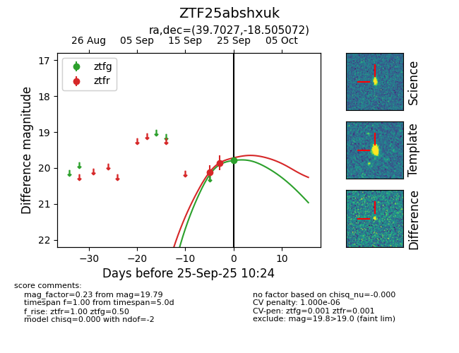
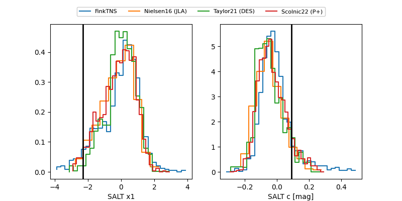

FINK: ZTF25abshxuk
Lasair: ZTF25abshxuk
ALeRCE: ZTF25abshxuk
ZTF25abshxuk (ztf,fink)
equatorial (ra, dec) = (39.7027,-18.50507)
galactic (l, b) = (199.3638,-63.86435)


last ztfg=19.79, ztfr=19.86
1 ztfg, 2 ztfr detections